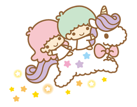

Welcome to the Miniature Fantasy ~
Little Twin Stars
Little Twin Stars
We Live, We Dream, We Relive.


History of Little Twin Stars 
The Little Twin Stars (Japanese: リトルツインスターズ) are a pair of Sanrio siblings created in 1975. They are similar to angels and
consist of a little boy with blue hair called Kiki and a little girl called Lala with long pink
hair. The younger brother is Kiki, and the older sister is Lala. Kiki and Lala have also been
seen with brown hair and blonde hair respectively.
Kiki and Lala were originally born on Omoiyari Star (also known as the Star of Compassion)in the Yume Star-Cloud and traveled
a long way to Earth to become "wonderful shining stars". They were born on December 24th (Christmas
Eve). The Little Twin Stars would spend time wondering about life on Earth and it was a planet
that they had heard much about. They set out to Earth with permission from "Mother-Star" and
"Father-Star" with the help of Lala's wand, and have been "spreading positivity, joy and love
to everyone they meet" after arriving on Earth.
Kiki Personality
Kiki is curious and full of energy, although he can come across as "flustered" or a little cheeky
at times. He can fly through the sky using a star on his back. He loves star fishing and inventions.
Lala Personality
Lala loves to draw and write poems and is great at cooking. She can come across as timid and cries easily.
Designed by Jeslyn Chen for Web Coding Workshop 2017